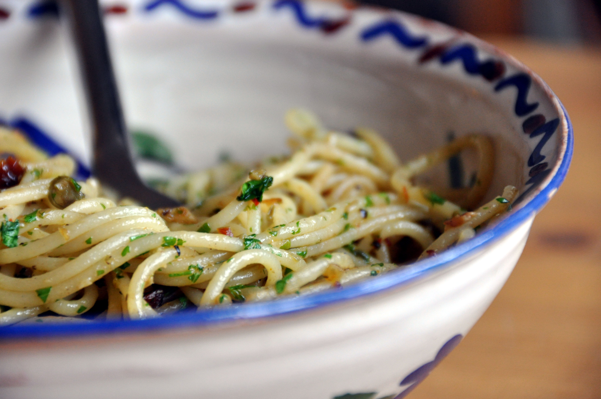

Home
The Simplest Garlic Butter Spaghetti

Guaranteed to have you full for the day AND night
Ingredients
- Spaghetti
- Butter
- Garlic
- Onions
- Mushrooms
- Chilli flakes, garlic powder, oregano, salt and pepper
- Olive oil
- Cheese (Mozzarella or parmesan)
Steps
- Boil water in a pot. Add salt and olive oil half way to enhance boiling. Once boiling, add spaghetti and leave for 5 minutes.
- In the mean time, dice up some onions and garlic.
- To a deep pan, low heat and add olive oil.
- Your spaghetti should be done by now. Reserve quarter cup of pasta water and drain the spaghet.
- Once at low heat, add garlic and onions. While stirring, add butter, garlic powder, oregano and chilli flakes.
- Add spaghetti and a bit of the pasta water. (DON'T ADD TOO MUCH)
- Mix well and throw in some salt and pepper.
- Kill the heat and add some cheese. Mix well
- Plate that shi in portions and you got some good carbs right there.